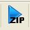
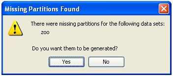
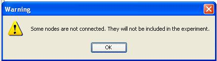
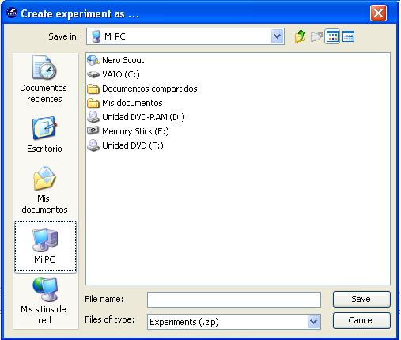
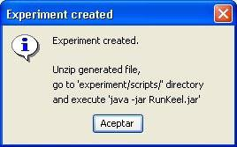
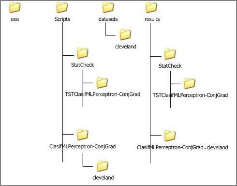

Generation of experiments
Once a experiment has been designed, the user can generate it through the option Run Experiment of the 'Tools' menu. Furthermore, it is possible to use the tools bar button:

At this point, the software tool will perform several tests about the completeness of the experiment. Firstly, if it detects that there are missing partitions for some of the data sets employed, the following dialog will be shown, allowing regenerating them:

This is the last opportunity to generate them. Else, the experiment will be generated incorrectly.
Secondly, if some of the elements of the graph are not connected by flows, the following warning will be prompt, and the isolated nodes will be discarded.

If everything is correct, the user will have to select a path for the experiment's zip file:

The generation process generates a ZIP file containing all the elements needed to run the experiment. If the experiment generation is completed successfully, the following message will be shown.

The experiment must be run using the RunKeel jar file located at experiment/scripts. In the following picture, we can see an example of the structure of directories that is created. We see that four directories are created:
